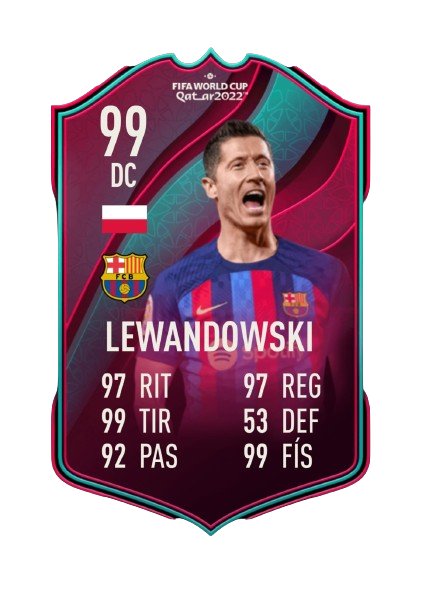

MEJOR JUGADOR DE CADA SELECCIÓN
Catar
Ahmed Alaaeldin

Inglaterra
Jude Bellingham

España
Sergio Busquets

Portugal
Cristiano Ronaldo

Bélgica
Kevin De Bruyne
Alemania
Leon Goretzka
Marruecos
Achraf Hakimi

Senegal
Kalidou Koulibaly

Japón
Take Kubo

Polonia
Robert Lewandowski
Francia
Kylian Mbappé

Serbia
Aleksandar Mitrović

Croacia
Luka Modrić
Costa Rica
Keylor Navas
Brasil
Neymar Jr.
Suiza
Yann Sommer
Corea del Sur
Son Heung-min

Países Bajos
Jurriën Timber

Uruguay